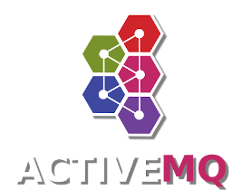

April 2023
Using the Qpid Proton C++ library to understand AMQP
AMQP is not a trivially-straightforward protocol to understand, but it's necessary to get to grips with it to write effective software that uses the Qpid Proton AMQP library. Perhaps one of the simplest ways to understand AMQP is to use Proton's own packet-tracing features, as this article explains.
Categories: C, middleware
Using an Oracle database as storage for the Apache Artemis message broker -- part 1
This article describes the fundamentals of setting up the Apache Artemis message broker to use an Oracle database as the message data store.
Categories: middleware
Using an Oracle database as storage for the Apache Artemis message broker -- part 2
This article is the second on my series on using the Oracle database as the message data store for the Apache Artemis message broker. In it, I describe the database schema, and how it supports messaging operations.
Categories: middleware